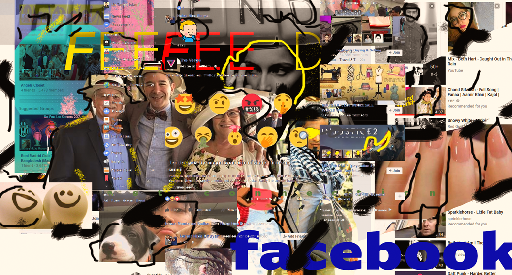

We love the tangible, the confirmation, the palpable, the real, the visible, the concrete, the known, the seen, the vivid, th'e visual, the social, the embedded, the emotionally laden, the salient, the stereotypical, the moving, the theatrical, the romanced, the cosmetic, the official, the scholarly-sounding verbiage (b******t), the pompous Gaussian economist, the mathematicized crap, the pomp, the Académie Française, Har- .vard Business School, the Nobel Prize, dark business suits with white shirts and Ferragamo ties, the moving discourse, and the lurid. Most of all we favor the narrated.
Alas, we are not manufactured, in our current edition of the human race, to understand abstract matters—we need context. Randomness and uncertainty are abstractions.
If you click on the "Hide" button, I will disappear.